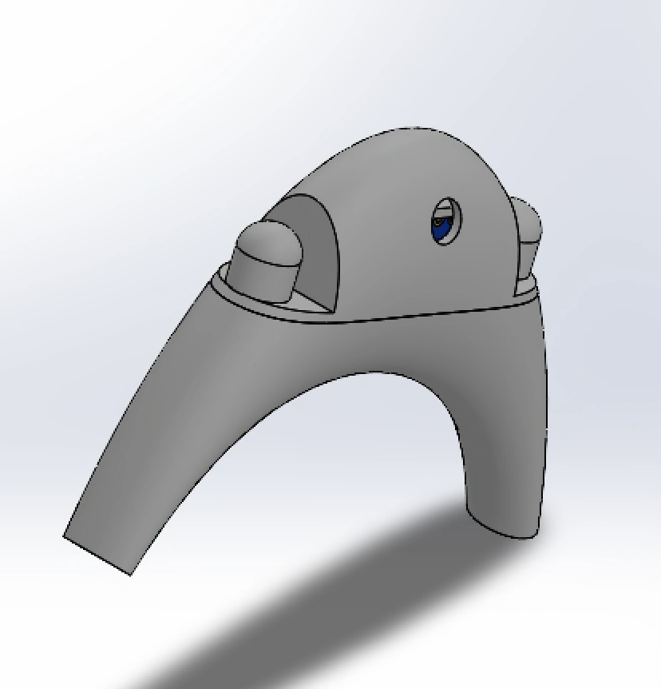
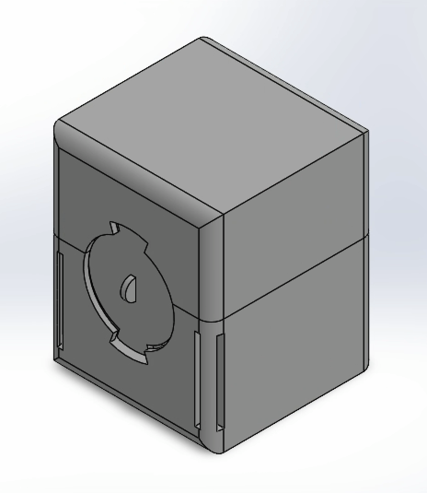
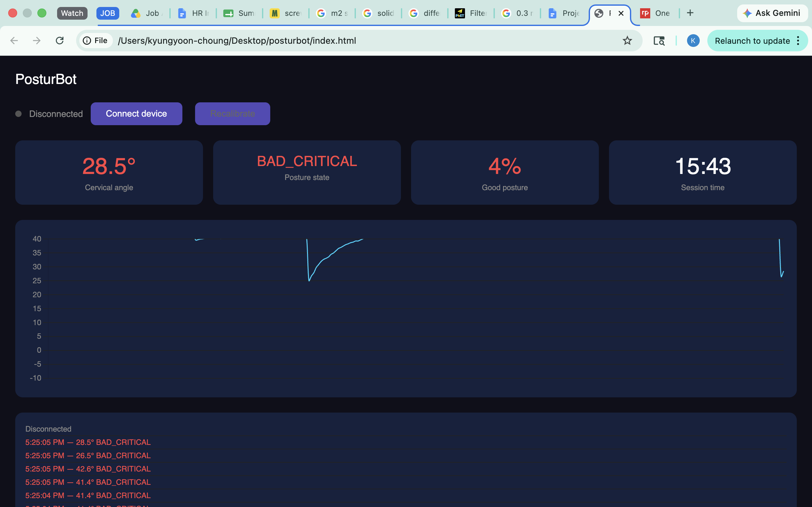

PosturBot
Dual-IMU Wearable Cervical Posture Monitor
A wearable prototype designed to monitor forward head posture by estimating relative head-to-neck orientation using two inertial measurement units. The project combines mechanical enclosure design, 3D printing, embedded electronics, and preliminary Bluetooth-based posture monitoring.
System Architecture
One MPU-6050 IMU is positioned near the ear to track head orientation, while a second IMU provides a reference measurement at the back of the neck. An ESP32-C3 reads sensor measurements and communicates with a browser-based dashboard through Bluetooth Low Energy.
Custom SolidWorks-designed housings accommodate the electronics, battery, wiring, and wearable attachment interfaces.

My Work
Mechanical CAD, prototyping, enclosure fabrication, electronics integration, and preliminary software development.
Current Prototype
Physical assembly completed with dual IMUs, microcontroller, and wired electronic components.
Development Status
V1 physical evaluation completed. V2 mechanical redesign and integrated validation are pending.
Physical Prototype & Engineering Challenges
Physical assembly revealed mechanical and integration issues that are guiding the next design iteration.
Assembled Prototype
Open neck enclosure showing integrated electronics, wiring, and connected head module.
Electronics Packaging
ESP32-C3, IMU, and wiring positioned inside the custom 3D-printed housing.
Wearable Assembly
Curved neck enclosure connected to the head-mounted sensor module.
V1 Inspection Findings → V2 Design Priorities
The following issues were identified through physical inspection. Proposed improvements have not yet been verified through V2 testing.
01 — Hinge Pin Durability
Observation: The 3D-printed slotted hinge pin fractured, and print asymmetry was observed.
Planned Improvement: Review pin geometry, local stress concentrations, and print orientation to improve mechanical durability.
02 — USB-C Accessibility
Observation: Connector clearance and port alignment limited access to the USB-C interface.
Planned Improvement: Reevaluate connector positioning, opening geometry, and cable clearance.
03 — PCB Retention
Observation: Internal partition walls provided component separation but did not adequately secure the PCB.
Planned Improvement: Develop dedicated retention features to limit unwanted PCB movement.
04 — IMU Mounting Stability
Observation: The neck IMU requires more secure positioning inside the enclosure.
Planned Improvement: Refine the sensor mounting interface to improve positional stability and repeatability.
Mechanical Design & Iterations
Mechanical requirements, early concepts, and CAD development of the wearable enclosures.
Design Requirements & Constraints
- Wearability: Create compact housings positioned near the ear and neck without skin adhesives.
- Sensor Placement: Maintain consistent IMU positioning for relative orientation measurements.
- Component Integration: Accommodate the microcontroller, sensors, battery, and wiring.
- Fabrication: Design for iterative FDM 3D printing.
- Assembly: Provide access for wiring, troubleshooting, and firmware updates.
These are qualitative design considerations. Quantitative acceptance criteria and verification procedures are being developed for the next iteration.
Concept Development
Initial sketches explored sensor placement, ear-hook geometry, mechanical mounting, and electronics packaging.

Sensor Placement
Exploring head and neck sensor positioning.

Ear-Hook Concept
Investigating wearable attachment and cable routing.

Mechanical Mounting
Preliminary mounting and enclosure assembly concepts.

Electronics Packaging
Planning internal component arrangement.
Ear-Hook Tracking Module

Ear Housing Assembly
Custom housing incorporating the head-side MPU-6050 IMU.

Ergonomic Base Contour
Curved geometry intended to fit around the ear without relying on adhesives.
Neck Module — Initial CAD Concept
The initial box-shaped enclosure explored component arrangement and mechanical access.

Main Neck Assembly

Internal Mounting Layout

Top-Down Layout
Neck Module — Curved Enclosure Redesign
The original box-shaped concept was redesigned into a curved enclosure intended to improve fit around the neck. The updated geometry incorporated a hinged cover, internal mounting features, USB-C access, and an external power switch opening. Physical inspection subsequently revealed issues requiring further refinement.
Curved Enclosure
Curved geometry intended to improve neck fit.
Internal Layout
Internal features and hinged access for assembly.
USB-C Access
Opening designed for firmware and USB access.
Power Switch Access
Dedicated opening for external switch operation.
Electronics & Software Integration
Dual-sensor hardware architecture and preliminary wireless monitoring interface.

Dual I2C Sensor Architecture
Two MPU-6050 IMUs share an I2C bus using separate addresses: 0x68 for the ear sensor and 0x69 for the neck reference sensor.
The ESP32-C3 processes sensor readings and supports Bluetooth Low Energy communication. A LiPo battery powers the system, while a transistor-controlled vibration motor provides haptic feedback.

Dashboard preview using placeholder data; not validated sensor measurements.
Web Bluetooth Dashboard
Developed a browser-based interface using the Web Bluetooth API for communication with the ESP32-C3, without requiring a dedicated mobile application.
- Implemented preliminary BLE sensor-data communication.
- Developed preliminary relative-angle estimation using dual IMUs.
- Implemented initial threshold-based posture feedback logic.
- Identified unexpected angle readings and inconsistent posture classification.
Sensor orientation and coordinate-axis assumptions require further investigation. The dashboard graph shown here uses placeholder data; integrated validation remains in progress.
Testing Status & Next Steps
Current development status and planned engineering work.
Completed / Observed
- Developed custom SolidWorks enclosure designs.
- Fabricated and assembled physical 3D-printed housings.
- Integrated dual IMUs, ESP32-C3, battery, and vibration motor.
- Established preliminary BLE communication.
- Inspected V1 mechanical issues involving hinge durability, USB-C clearance, PCB retention, and IMU mounting.
Planned / In Progress
- Define measurable V2 mechanical design requirements.
- Redesign hinge geometry and component-retention features.
- Improve USB-C access and sensor mounting stability.
- Investigate IMU orientation and relative-angle estimation errors.
- Fabricate and evaluate the revised enclosure.
- Perform integrated system verification and validation.
Engineering Focus: The next development phase emphasizes translating physical prototype observations into measurable design requirements, implementing mechanical revisions, and evaluating whether those revisions address the identified limitations.